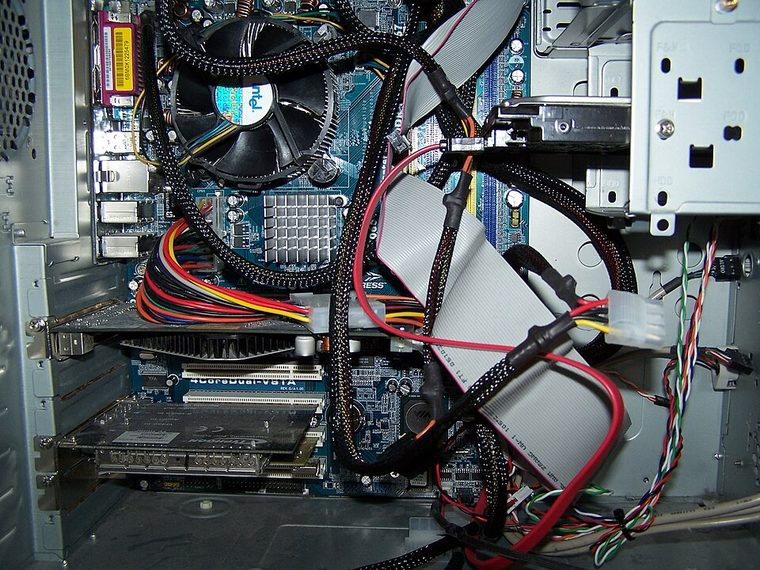

[ INDIVIDUAL COMPONENT // MOTHERBOARDS ]
ASRock 775Dual-VSTA
Transitional LGA775 VIA desktop platform, 2006. This record documents the named model and its documented variants; confirm the PCB revision, submodel and firmware on the physical unit.

REVISION WARNING: Similar model names and PCB revisions may have different processors, connectors or firmware. Read the silkscreen and assembly code; use the support files for that exact board variant.
Specifications
| Catalog subcategory | Legacy Intel desktop platforms |
|---|---|
| Exact model / era | ASRock 775Dual-VSTA — Transitional LGA775 VIA desktop platform, 2006 |
| CPU and socket / SoC | LGA775 Intel Core 2 Duo, Pentium 4/D and Celeron families as listed by ASRock; processor/FSB support varies by BIOS |
| Chipset / platform | VIA PT880 Pro / VT8237A |
| Memory | Two DDR and two DDR2 DIMM sockets; DDR and DDR2 cannot be mixed; board-specific capacity and speed limits apply |
| Slots and connectivity | ATX; AGP 8x plus PCIe x16-length slot with reduced lane wiring, four PCI; two SATA 1.5 Gb/s, IDE, USB 2.0, LAN and audio |
| Firmware | ASRock BIOS; confirm PCB model and firmware before installing a later Core 2 CPU. |
Compatibility and revision notes
The board's unusual AGP/PCIe bridging and dual DDR generations do not imply simultaneous use. Use the exact memory population table and account for the PCIe slot's reduced electrical width.
Socket, connector shape and family branding alone do not establish compatibility. Verify the exact processor list, minimum BIOS, memory population table, power input, dimensions, and shared-lane behavior in the cited manual before installation.
Preservation and repair
Check AGP and PCIe slot solder, capacitor condition, and cooler clearance between the CPU socket and northbridge. Photograph jumper positions; do not hot-swap DDR and DDR2 modules.
For archival preservation, photograph the PCB, labels, connectors and included accessories before cleaning. Record serial/date codes, firmware versions, known faults, prior repairs and test conditions; use ESD-safe handling and do not power a board with loose conductive hardware beneath it.
Sources & further reading
- ASRock 775Dual-VSTA — product/manual referenceModel-specific platform, board layout and interface reference.
- ASRock 775Dual-VSTA — support and firmware resourcesSupport documentation; match the PCB revision, CPU support list and firmware release to the physical board.
Manufacturer/model documentation is the primary reference. Where vendor support is archived, match its revision notes to the board and do not cross-flash firmware from a similar product.